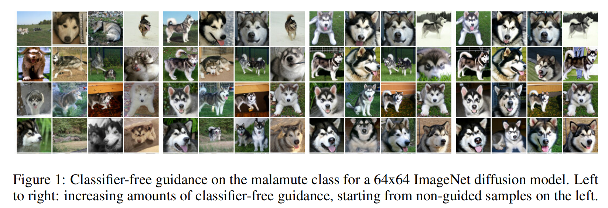
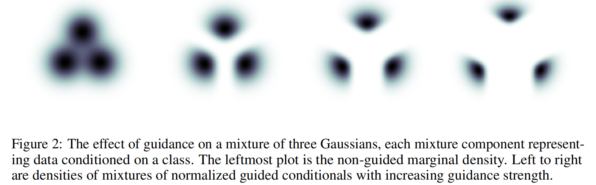
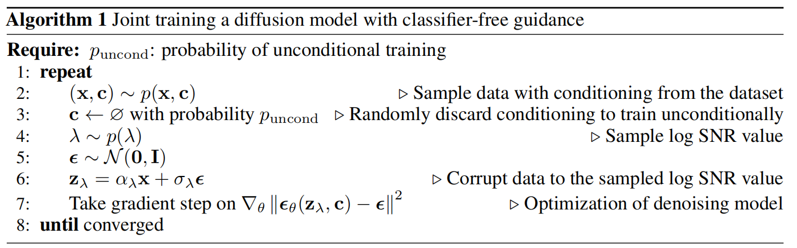
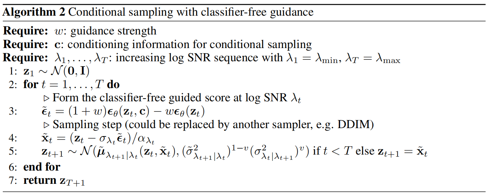
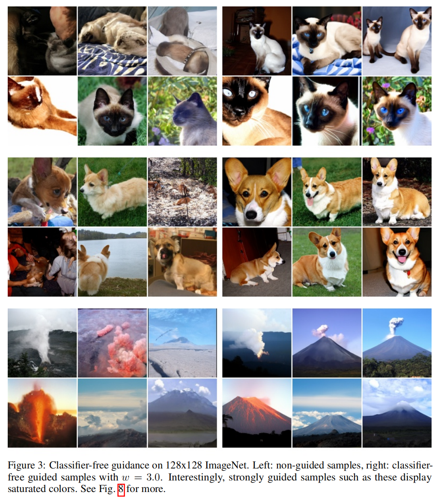
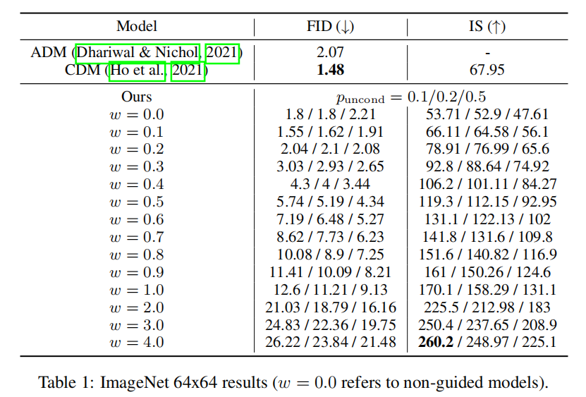
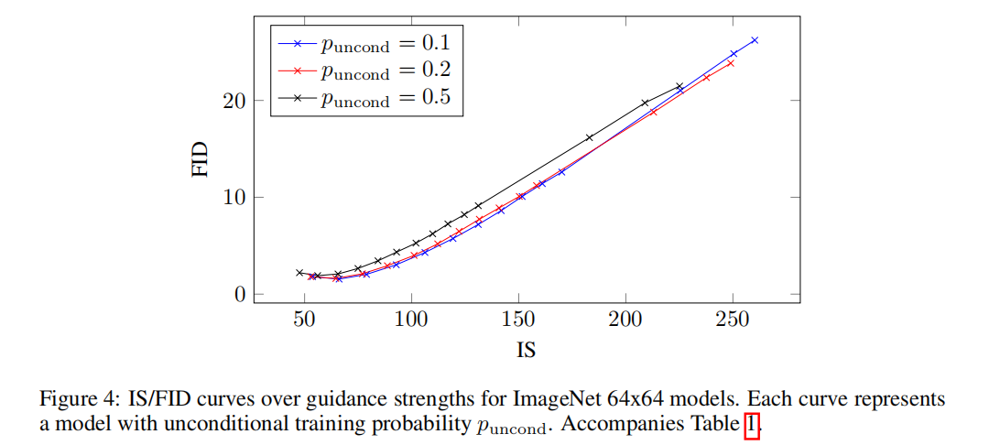
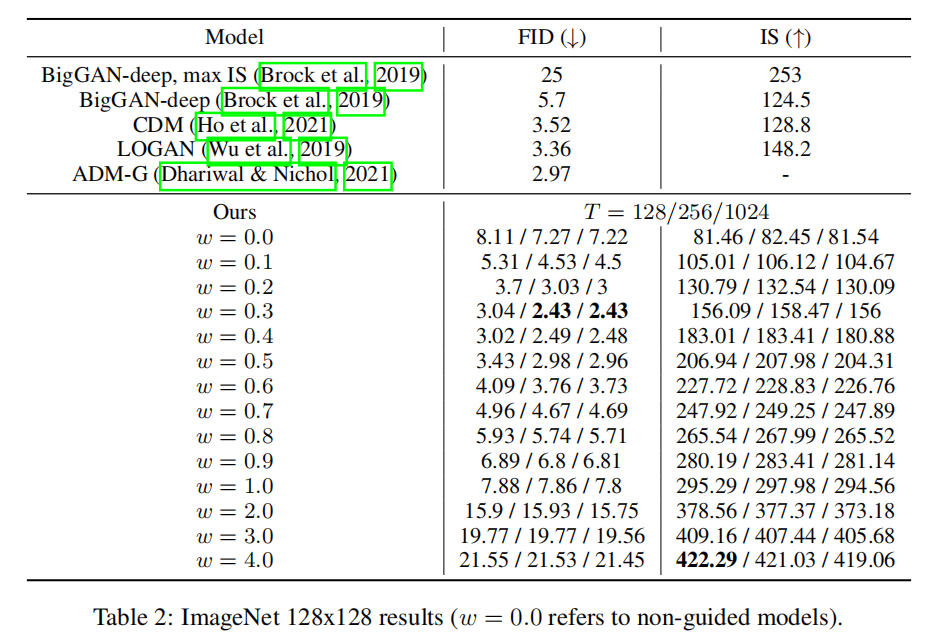

全文翻译
摘要
分类器引导（Classifier guidance）是最近提出的一种方法，用于在条件扩散模型训练后，在模式覆盖和样本保真度之间进行权衡，这与其他类型生成模型中的低温采样或截断操作思路相似。分类器引导将扩散模型的得分估计与图像分类器的梯度相结合，因此需要训练一个与扩散模型分离的图像分类器。这也引发了一个问题：能否在不使用分类器的情况下进行引导。我们证明，确实可以通过一个纯生成模型在不使用分类器的情况下进行引导：在我们称为无分类器引导（classifier-free guidance）的方法中，我们联合训练一个条件扩散模型和一个无条件扩散模型，并结合得到的条件和无条件得分估计，在样本质量和多样性之间实现类似于使用分类器引导时的权衡。
1 引言
扩散模型最近已成为一类表现力强且灵活的生成模型，在图像和音频合成任务中，其生成的样本质量和似然得分颇具竞争力（索尔 - 迪克斯坦等人，2015；宋与埃尔蒙，2019；何等人，2020；宋等人，2021b；金马等人，2021；宋等人，2021a）。这些模型在音频合成性能上，能与自回归模型相媲美，且推理步骤大幅减少（陈等人，2021；孔等人，2021）；在ImageNet图像生成任务中，它们在FID分数和分类准确率方面，超越了BigGAN-deep（布罗克等人，2019）和VQ-VAE-2（拉扎维等人，2019）（何等人，2021；达里瓦尔与尼科尔，2021）。
达里瓦尔和尼科尔（2021）提出了分类器引导技术，这是一种利用额外训练的分类器来提升扩散模型样本质量的方法。在分类器引导出现之前，人们不知道如何从扩散模型中生成类似于截断的BigGAN（布罗克等人，2019）或低温的Glow（金马与达里瓦尔，2018）所产生的 “低温 ”样本：像缩放模型得分向量或减少扩散采样过程中添加的高斯噪声量等简单尝试，都没有效果（达里瓦尔与尼科尔，2021）。而分类器引导则是将扩散模型的得分估计与分类器的对数概率输入梯度相混合。通过改变分类器梯度的强度，达里瓦尔和尼科尔能够以类似于改变BigGAN截断参数的方式，在Inception分数（萨利曼斯等人，2016）和FID分数（赫塞尔等人，2017）（即精度和召回率）之间进行权衡。
|  |
|---|
| 图 1：64x64 ImageNet 扩散模型在阿拉斯加雪橇犬类别上的无分类器引导。从左到右：无分类器引导的强度逐渐增加，最左边是未引导的样本。 |
|  |
|---|
| 图 2：引导对三个高斯混合模型的影响，每个混合成分代表基于一个类别的数据。最左边的图是未引导的边缘密度。从左到右是随着引导强度增加，归一化引导条件混合的密度。 |
我们关注的是，能否在不使用分类器的情况下实现分类器引导。分类器引导使扩散模型的训练流程变得复杂，因为它需要额外训练一个分类器，而且这个分类器必须在有噪声的数据上进行训练，所以通常无法直接使用预训练的分类器。此外，由于分类器引导在采样过程中将得分估计与分类器梯度混合，基于分类器引导的扩散采样可以被看作是试图用基于梯度的对抗攻击来迷惑图像分类器。这就引发了一个问题：分类器引导在提升基于分类器的指标（如FID和Inception分数）方面的成功，是否仅仅是因为它对这类分类器具有对抗性。沿着分类器梯度的方向进行采样，也与生成对抗网络（GAN）的训练有相似之处，特别是对于非参数化生成器；这也让人怀疑，基于分类器引导的扩散模型在基于分类器的指标上表现良好，是否是因为它们开始类似于GAN，而GAN在这些指标上的表现本就不错。
为了解决这些问题，我们提出了无分类器引导方法，这是一种完全避免使用任何分类器的引导方法。无分类器引导不是沿着图像分类器的梯度方向进行采样，而是将条件扩散模型和联合训练的无条件扩散模型的得分估计进行混合。通过调整混合权重，我们实现了与分类器引导类似的FID/Inception分数权衡。我们的无分类器引导结果表明，纯生成扩散模型能够合成与其他类型生成模型相当的极高保真度样本。
2 背景
我们在连续时间内训练扩散模型（Song等人，2021b；Chen等人，2021；Kingma等人，2021）：设$x \sim p(x)$，对于超参数$\lambda_{min }<\lambda_{max } \in \mathbb{R}$，令$z = \{z_{\lambda} | \lambda \in[\lambda_{min }, \lambda_{max }]\}$，前向过程$q(z | x)$是方差保持的马尔可夫过程（Sohl-Dickstein等人，2015）：
当$x \sim p(x)$且$z \sim q(z | x)$时，我们用符号$p(z)$（或$p(z_{\lambda})$ ）表示$z$（或$z_{\lambda}$ ）的边缘分布。注意$\lambda=\log \frac{\alpha_{\lambda}^{2}}{\sigma_{\lambda}^{2}}$，因此$\lambda$可以解释为$z_{\lambda}$的对数信噪比，并且前向过程朝着$\lambda$减小的方向进行。
在给定$x$的条件下，前向过程可以通过反向转移$q(z_{\lambda’} | z_{\lambda}, x)=N(\tilde{\mu}_{\lambda’ | \lambda}(z_{\lambda}, x), \tilde{\sigma}_{\lambda’ | \lambda}^{2} I)$来描述，其中：
反向过程生成模型从$p_{\theta}(z_{\lambda_{min }}) = N(0, I)$开始。我们指定转移方式为：
在采样过程中，我们沿着递增序列$\lambda_{min }=\lambda_{1}<\cdots<\lambda_{T}=\lambda_{max }$应用这种转移，共进行$T$个时间步；换句话说，我们采用Sohl-Dickstein等人（2015）和Ho等人（2020）提出的离散时间祖先采样方法。如果模型$x_{\theta}$是正确的，那么当$T \to \infty$时，我们从一个随机微分方程（SDE）中获得样本，该SDE的样本路径服从$p(z)$分布（Song等人，2021b），我们用$p_{\theta}(z)$表示连续时间模型分布。方差是$\overline{\sigma}_{\lambda’ | \lambda}^{2}$和$\sigma_{\lambda | \lambda}^{2}$在对数空间的插值，这是根据Nichol和Dhariwal（2021）的建议；我们发现使用一个常数超参数$v$比使用依赖于$z_{\lambda}$的学习参数更有效。注意，当$\lambda’ \to \lambda$时，方差简化为$\tilde{\sigma}_{\lambda’ | \lambda}^{2}$，所以$v$只有在实际采样中使用非无穷小时间步时才有作用。
反向过程的均值来自于将估计值$x_{\theta}(z_{\lambda}) \approx x$代入$q(z_{\lambda’} | z_{\lambda}, x)$（Ho等人，2020；Kingma等人，2021）（$x_{\theta}$也将$\lambda$作为输入，但为了符号简洁，我们省略了这一点）。我们用$\epsilon$预测来参数化$x_{\theta}$（Ho等人，2020）：$x_{\theta}(z_{\lambda}) = \frac{z_{\lambda}-\sigma_{\lambda} \epsilon_{\theta}(z_{\lambda})}{\alpha_{\lambda}}$，并基于以下目标进行训练：
其中$\epsilon \sim N(0, I)$，$z_{\lambda}=\alpha_{\lambda} x+\sigma_{\lambda} \epsilon$，$\lambda$从$[\lambda_{min }, \lambda_{max }]$上的分布$p(\lambda)$中采样得到。这个目标是在多个噪声尺度上的去噪得分匹配（Vincent，2011；Hyvärinen和Dayan，2005），当$p(\lambda)$是均匀分布时，该目标与潜在变量模型$\int p_{\theta}(x | z) p_{\theta}(z) dz$的边际对数似然的变分下界成正比，这里忽略了未指定解码器$p_{\theta}(x | z)$和$z_{\lambda_{min }}$处先验的项（Kingma等人，2021）。如果$p(\lambda)$不是均匀分布，该目标可以解释为加权变分下界，其权重可用于调整样本质量（Ho等人，2020；Kingma等人，2021）。我们使用受Nichol和Dhariwal（2021）离散时间余弦噪声调度启发的$p(\lambda)$：通过$\lambda=-2 \log \tan (au + b)$对均匀分布在$[0, 1]$上的$u$进行采样得到$\lambda$，其中$b=\arctan (e^{-\lambda_{max } / 2})$，$a=\arctan (e^{-\lambda_{min } / 2}) - b$。这表示一种经过修改后在有界区间上有支撑的双曲正割分布。对于有限时间步生成，我们使用对应于均匀分布在$[0, 1]$上的$u$的$\lambda$值，最终生成的样本是$x_{\theta}(z_{\lambda_{max }})$。
由于对于所有的$\lambda$，$\epsilon_{\theta}(z_{\lambda})$的损失都是去噪得分匹配，所以我们模型学习到的得分$\epsilon_{\theta}(z_{\lambda})$估计了我们的含噪数据$z_{\lambda}$分布的对数密度的梯度，即$\epsilon_{\theta}(z_{\lambda}) \approx-\sigma_{\lambda} \nabla_{z_{\lambda}} \log p(z_{\lambda})$；然而需要注意的是，由于我们使用无约束神经网络来定义$\epsilon_{\theta}$，所以不一定存在任何标量势，使得其梯度为$\epsilon_{\theta}$。从学习到的扩散模型中采样类似于使用朗之万扩散从一系列收敛到原始数据$x$的条件分布$p(x)$的分布$p(z_{\lambda})$中进行采样。
在条件生成建模的情况下，数据$x$与条件信息$c$（例如用于类别条件图像生成的类别标签）联合采样。对模型唯一的修改是反向过程函数近似器将$c$作为输入，如$\epsilon_{\theta}(z_{\lambda}, c)$。
3 引导
诸如生成对抗网络（GANs）和基于流的模型等特定生成模型，具有一个有趣的特性：在采样时，通过降低输入到生成模型的噪声方差或范围，能够执行截断采样或低温采样。其预期效果是在减少样本多样性的同时，提高单个样本的质量。例如，BigGAN（Brock等人，2019）中的截断操作，在低截断量和高截断量下，分别在FID分数和Inception分数之间产生了权衡曲线。Glow（Kingma和Dhariwal，2018）中的低温采样也有类似效果。
遗憾的是，在扩散模型中直接尝试实施截断或低温采样的效果并不理想。比如，缩放模型得分或降低反向过程中高斯噪声的方差，会使扩散模型生成模糊、低质量的样本（Dhariwal和Nichol，2021）。
3.1 分类器引导
为了在扩散模型中获得类似截断的效果，Dhariwal和Nichol（2021）引入了分类器引导，即将扩散得分$\epsilon_{\theta}(z_{\lambda}, c) \approx -\sigma_{\lambda} \nabla_{z_{\lambda}} \log p(z_{\lambda} | c)$进行修改，使其包含辅助分类器模型$p_{\theta}(c | z_{\lambda})$对数似然的梯度，具体如下：
其中，$w$是一个控制分类器引导强度的参数。在从扩散模型采样时，这个修改后的得分$\tilde{\epsilon}_{\theta}(z_{\lambda}, c)$会替代$\epsilon_{\theta}(z_{\lambda}, c)$，从而得到近似来自分布$\tilde{p}_{\theta}\left(z_{\lambda} | c\right) \propto p_{\theta}\left(z_{\lambda} | c\right) p_{\theta}\left(c | z_{\lambda}\right)^{w}$的样本。
这样做的效果是，对分类器$p_{\theta}(c | z_{\lambda})$为正确标签分配高似然的数据，提升其概率权重：能够被准确分类的数据，在衡量感知质量的Inception分数上得分较高（Salimans等人，2016），而这正是Inception分数在设计上对生成模型的奖励机制。因此，Dhariwal和Nichol发现，通过设置$w > 0$，他们可以提高扩散模型的Inception分数，但代价是样本的多样性会降低。

图2展示了对一个包含三个类别的二维示例，通过数值求解引导公式$\tilde{p}_{\theta}(z_{\lambda} | c) \propto p_{\theta}(z_{\lambda} | c) p_{\theta}(c | z_{\lambda})^{w}$后的效果。在该示例中，每个类别的条件分布都是各向同性高斯分布。应用引导后，每个条件分布的形式明显不再是高斯分布。随着引导强度的增加，每个条件分布将概率质量从其他类别处移开，朝着逻辑回归给出的高置信度方向集中，并且大部分概率质量会集中在更小的区域。这种现象可以看作是在ImageNet模型中，增加分类器引导强度时，Inception分数提升和样本多样性降低的一种简单体现。
从理论上讲，对无条件模型应用权重为$w + 1$的分类器引导，与对条件模型应用权重为$w$的分类器引导会得到相同的结果，因为$p_{\theta}(z_{\lambda} | c) p_{\theta}(c | z_{\lambda})^{w} \propto p_{\theta}(z_{\lambda}) p_{\theta}(c | z_{\lambda})^{w + 1}$；从得分的角度来看：
但有趣的是，Dhariwal和Nichol发现，将分类器引导应用于已经是类别条件的模型时，效果最佳，而不是应用于无条件模型。因此，我们后续将采用对已有的条件模型进行引导的设定。
3.2 无分类器引导
虽然分类器引导如预期的那样，能够在Inception分数（IS）和FID分数之间进行权衡，就像截断采样或低温采样一样，但它依赖于图像分类器的梯度。出于第1节所述的原因，我们试图摆脱对分类器的依赖。在此，我们介绍无分类器引导方法，它在不依赖这些梯度的情况下，也能达到相同的效果。无分类器引导是一种修改$\epsilon_{\theta}(z_{\lambda}, c)$的替代方法，其效果与分类器引导相同，但无需分类器。算法1和算法2详细描述了无分类器引导的训练和采样过程。

我们没有训练一个单独的分类器模型，而是选择训练一个通过得分估计器$\epsilon_{\theta}(z_{\lambda})$参数化的无条件去噪扩散模型$p_{\theta}(z)$，以及一个通过$\epsilon_{\theta}(z_{\lambda}, c)$参数化的条件模型$p_{\theta}(z | c)$。我们使用单个神经网络对这两个模型进行参数化，对于无条件模型，在预测得分时，我们只需为类别标识符$c$输入一个空标记$ø$，即$\epsilon_{\theta}(z_{\lambda})=\epsilon_{\theta}(z_{\lambda}, c = ø)$。我们通过以某个超参数$p_{uncond}$的概率，随机将$c$设置为无条件类别标识符$∞$，来联合训练无条件模型和条件模型（当然，也可以分别训练这两个模型，但我们选择联合训练，因为它实现起来极其简单，不会使训练流程复杂化，也不会增加参数总数）。然后，我们使用条件得分估计和无条件得分估计的以下线性组合进行采样：
公式（6）中不存在分类器梯度，因此，沿着$\tilde{\epsilon}_{\theta}$方向进行采样步，不能被解释为对图像分类器的基于梯度的对抗攻击。此外，由于使用了无约束神经网络，$\tilde{\epsilon}_{\theta}$是由非保守向量场的得分估计构建而成，所以一般不存在像分类器对数似然这样的标量势，使得$\tilde{\epsilon}_{\theta}$成为分类器引导得分。
尽管一般情况下，可能不存在一个分类器，使得公式（6）成为其分类器引导得分，但实际上，它的灵感来自于一个隐式分类器$p^{i}(c | z_{\lambda}) \propto \frac{p(z_{\lambda} | c)}{p(z_{\lambda})}$的梯度。如果我们能获得精确得分和（分别对应于$p(z_{\lambda} | c)$和$p(z)$的得分），那么这个隐式分类器的梯度将是，使用这个隐式分类器的分类器引导会将得分估计修改为。注意它与公式（6）的相似之处，但也要注意与$\tilde{\epsilon}_{\theta}(z_{\lambda}, c)$有根本区别。前者由缩放后的分类器梯度构建而成；后者则由估计值$\epsilon_{\theta}(z_{\lambda}, c)-\epsilon_{\theta}(z_{\lambda})$构建，并且由于得分估计是无约束神经网络的输出，所以这个表达式一般不是任何分类器（缩放后的）梯度。
先验地看，通过贝叶斯规则反转一个生成模型，能否得到一个能提供有用引导信号的良好分类器，并不明确。例如，Grandvalet和Bengio（2004）发现，判别式模型通常优于从生成模型导出的隐式分类器，即使在生成模型的设定与数据分布完全匹配的人工设定场景中也是如此。在像我们这样预期模型设定存在偏差的情况下，通过贝叶斯规则导出的分类器可能不一致（Grünwald和Langford，2007），我们无法保证其性能。尽管如此，在第4节中，我们通过实验表明，无分类器引导能够以与分类器引导相同的方式，在FID和IS之间进行权衡。在第5节中，我们将讨论无分类器引导相对于分类器引导的意义。
4 实验
我们在按面积下采样的类别条件ImageNet数据集（Russakovsky等人，2015）上，使用无分类器引导方法训练扩散模型。自BigGAN论文（Brock等人，2019）以来，该数据集就被用于研究FID和Inception分数之间的权衡。
|  |
|---|
| 图 3：128×128 ImageNet 图像上的无分类器引导。左图：未引导的样本；右图：引导强度 w = 3.0 的无分类器引导样本。有趣的是，像这样强引导的样本呈现出饱和的色彩。更多内容见图 8。 |
我们进行实验的目的是为了证明概念，展示无分类器引导能够实现与分类器引导类似的FID/Inception分数权衡，并了解无分类器引导的特性，而不是一定要在这些基准测试中将样本质量指标提升到最先进水平。为此，我们采用了与Dhariwal和Nichol（2021）的有引导扩散模型相同的模型架构和超参数（除了第2节中指定的连续时间训练）；这些超参数设置是针对分类器引导进行调整的，因此对无分类器引导而言可能并非最优。此外，由于我们将条件模型和无条件模型合并到同一架构中，且未使用额外的分类器，实际上我们使用的模型容量比之前的研究更少。尽管如此，我们的无分类器引导模型在样本质量指标上仍具有竞争力，有时甚至优于先前的工作，这在以下部分会有所体现。
4.1 改变无分类器引导强度
在此，我们通过实验验证本文的主要观点：无分类器引导能够像分类器引导或GAN截断那样，在Inception分数（IS）和FID分数之间进行权衡。我们将提出的无分类器引导方法应用于64×64和128×128的类别条件ImageNet图像生成任务。在表1和图4中，我们展示了在64×64的ImageNet模型上，改变引导强度$w$对样本质量的影响；表2和图5展示了128×128模型的相同结果。我们考虑$w \in \{0, 0.1, 0.2, \cdots, 4\}$，并按照Heusel等人（2017）和Salimans等人（2016）的方法，针对每个$w$值使用50000个样本计算FID和Inception分数。所有模型的对数信噪比端点均为$\lambda_{min }=-20$和$\lambda_{max }=20$。64×64的模型使用采样器噪声插值系数$v = 0.3$，并训练40万步；128×128的模型使用$v = 0.2$，并训练270万步。
我们发现，在使用少量引导（$w = 0.1$或$w = 0.3$，具体取决于数据集）时，能获得最佳的FID结果；在强引导（$w ≥ 4$）时，能获得最佳的Inception分数结果。在这两个极端之间，我们可以清楚地看到感知质量的这两个指标之间的权衡，随着$w$的增加，FID单调下降，Inception分数单调上升。我们的结果与Dhariwal和Nichol（2021）以及Ho等人（2021）的结果相比具有优势，实际上，我们128×128模型的结果在文献中处于领先水平。在$w = 0.3$时，我们模型在128×128 ImageNet上的FID分数优于分类器引导的ADM-G；在$w = 4.0$时，当BigGAN-deep在其Inception分数最佳的截断水平下进行评估时，我们的模型在FID和Inception分数上均超过了BigGAN-deep。
图1、图3以及图6至图8展示了我们模型在不同引导水平下随机生成的样本：从这些图中可以明显看出，增加无分类器引导强度具有预期效果，即减少样本多样性并提高单个样本的保真度。
|  |
|---|
| 表 1：ImageNet 64x64 数据集的结果（表示未使用引导的模型）。 |
|  |
|---|
| 图 4：ImageNet 64×64 模型在不同引导强度下的 IS/FID 曲线。每条曲线代表一个具有不同无条件训练概率$p_{uncond}$的模型。与表 1 对应 |
4.2 改变无条件训练概率
无分类器引导在训练时的主要超参数是$p_{uncond}$，即联合训练条件扩散模型和无条件扩散模型时，进行无条件生成训练的概率。在此，我们研究在64×64的ImageNet上，改变$p_{uncond}$对模型训练的影响。
表1和图4展示了$p_{uncond}$对样本质量的影响。我们训练了$p_{uncond} \in \{0.1, 0.2, 0.5\}$的模型，所有模型均训练40万步，并在不同引导强度下评估样本质量。我们发现，在整个IS/FID前沿上，$p_{uncond} = 0.5$的模型表现始终不如$p_{uncond} \in \{0.1, 0.2\}$的模型；$p_{uncond} \in \{0.1, 0.2\}$的模型之间表现大致相同。基于这些发现，我们得出结论：为了生成对样本质量有效的无分类器引导分数，扩散模型只需将相对较小的一部分模型容量用于无条件生成任务。有趣的是，对于分类器引导，Dhariwal和Nichol报告称，容量较小的分类器就足以实现有效的分类器引导采样，这与我们在无分类器引导模型中发现的现象相呼应。
4.3 改变采样步数
由于采样步数$T$对扩散模型的样本质量有重大影响，在此我们研究改变$T$对128×128 ImageNet模型的影响。表2和图5展示了在一系列引导强度下，改变$T \in \{128, 256, 1024\}$的效果。正如预期的那样，增加$T$可以提高样本质量，对于这个模型，$T = 256$在样本质量和采样速度之间达到了良好的平衡。
需要注意的是，$T = 256$大约是ADM-G（Dhariwal和Nichol，2021）使用的采样步数，而我们的模型性能优于ADM-G。然而，重要的是要注意到，我们方法的每个采样步需要对去噪模型进行两次评估，一次用于计算条件$\epsilon_{\theta}(z_{\lambda}, c)$，一次用于计算无条件$\epsilon_{\theta}(z_{\lambda})$。因为我们使用了与ADM-G相同的模型架构，所以在采样速度方面进行公平比较的话，应该是我们$T = 128$的设置，在FID分数上，该设置的表现不如ADM-G。
|  |
|---|
| 表 2：ImageNet 128x128 数据集的结果（表示未使用引导的模型）。 |
| 图 5：ImageNet 128×128 模型在不同引导强度下的 IS/FID 曲线。每条曲线代表使用不同时间步长进行采样的结果。与表 2 对应。 |
5 讨论
我们的无分类器引导方法最实际的优势在于其极度的简洁性：在训练过程中，它仅仅是一行代码的改动——随机舍弃条件信息；在采样过程中，也只是将条件和无条件得分估计进行混合。相比之下，分类器引导使训练流程变得复杂，因为它需要额外训练一个分类器。而且这个分类器必须在带噪的$z_{\lambda}$数据上进行训练，所以无法直接使用标准的预训练分类器。
由于无分类器引导能够在不需要额外训练分类器的情况下，像分类器引导那样在Inception分数（IS）和FID分数之间进行权衡，我们已经证明了仅使用纯生成模型就可以实现引导。此外，我们的扩散模型是由无约束神经网络参数化的，因此其得分估计与分类器梯度不同（Salimans & Ho, 2021），不一定构成保守向量场。所以，我们的无分类器引导采样器所采取的步骤方向与分类器梯度毫无相似之处，不能被解释为对分类器的基于梯度的对抗攻击。因此，我们的结果表明，通过一种并非利用分类器梯度对图像分类器进行对抗的采样过程，纯生成模型就可以提升基于分类器的IS和FID指标。
我们还对引导的工作原理有了直观的理解：它降低了样本的无条件似然，同时提高了条件似然。无分类器引导通过一个负的得分项来降低无条件似然，据我们所知，这种方法尚未被深入研究，可能在其他应用中也有潜在用途。
这里介绍的无分类器引导依赖于训练一个无条件模型，但在某些情况下可以避免这种做法。如果类别分布是已知的，并且类别数量较少，我们可以利用$\sum_{c} p(x | c) p(c)=p(x)$这一事实，从条件得分中获得无条件得分，而无需专门为无条件得分进行训练。当然，这需要进行与$c$的可能取值数量相同次数的前向传播，对于高维条件而言效率较低。
无分类器引导的一个潜在缺点是采样速度。一般来说，分类器可以比生成模型更小、运行速度更快，所以分类器引导采样可能比无分类器引导采样更快，因为后者需要对扩散模型进行两次前向传播，一次用于计算条件得分，另一次用于计算无条件得分。通过改变架构，在网络较靠后的阶段注入条件信息，或许可以减少多次运行扩散模型前向传播的必要性，但我们将这一探索留作未来的工作。
最后，任何以牺牲多样性为代价来提高样本保真度的引导方法，都必须面对多样性降低是否可接受的问题。在实际应用的模型中，这可能会产生负面影响，因为在数据的某些部分在整体数据背景下代表性不足的应用场景中，保持样本多样性至关重要。尝试在保持样本多样性的同时提高样本质量，将是一个有趣的未来研究方向。
6 结论
我们提出了无分类器引导方法，这是一种在扩散模型中提高样本质量同时降低样本多样性的方法。无分类器引导可被视为没有分类器的分类器引导。我们的研究结果表明，无分类器引导是有效的，这证实了纯生成扩散模型能够在完全避免使用分类器梯度的情况下，最大化基于分类器的样本质量指标。我们期待在更广泛的场景和数据模态中进一步探索无分类器引导方法。